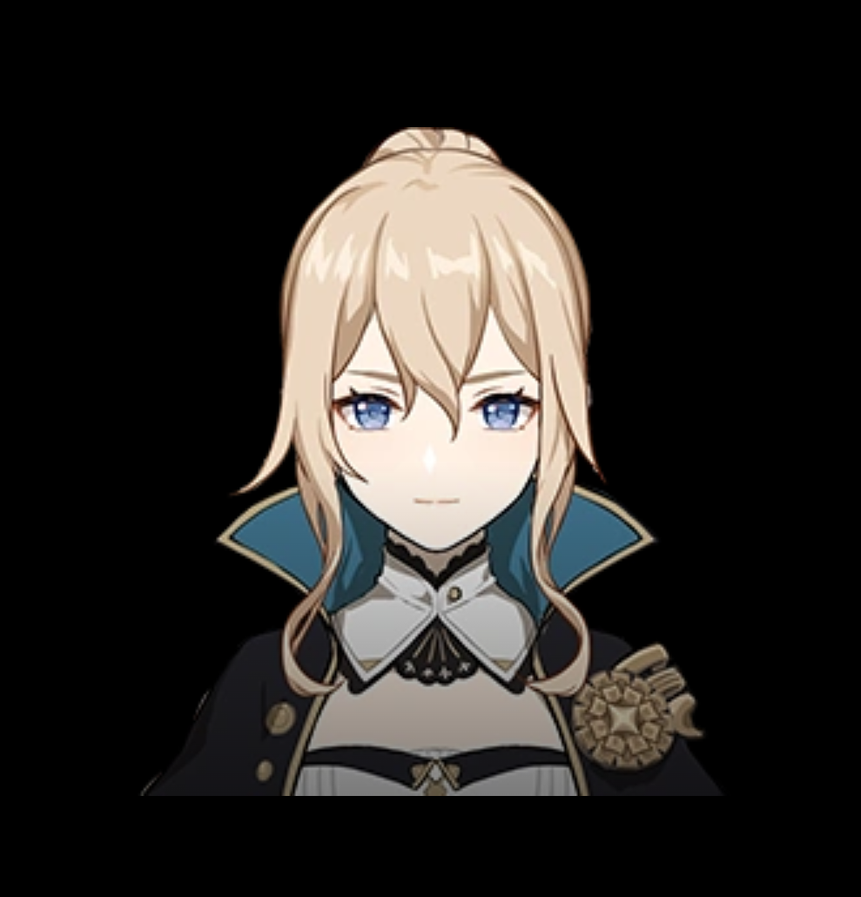

Anemo Element | 5-Star Healer

serves as the Acting Grand Master of the Knights of Favonius, known for her strong sense of duty and quiet leadership. Calm, disciplined, and endlessly hardworking, she often puts the needs of Mondstadt above her own well-being, earning deep respect from both citizens and fellow knights. In combat, Jean excels as a versatile support and healer, using her Anemo abilities to control crowds, cleanse debuffs, and restore her team's HP while still dealing respectable damage. Despite her composed exterior, she struggles with overwork and self-pressure, which makes her feel very human and relatable, and adds emotional depth to her role as Mondstadt's steadfast protector.
Jean's preferred weapons for combat:
A sword that boosts physical damage and healing utility.
A balanced sword for varied builds.
Jean enjoys training and aiding those in need. Her leadership and work ethic are exemplary.